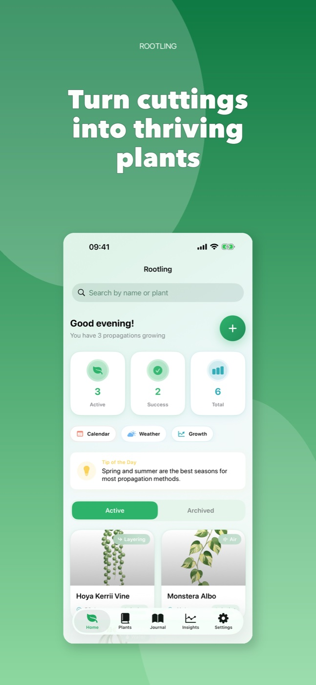
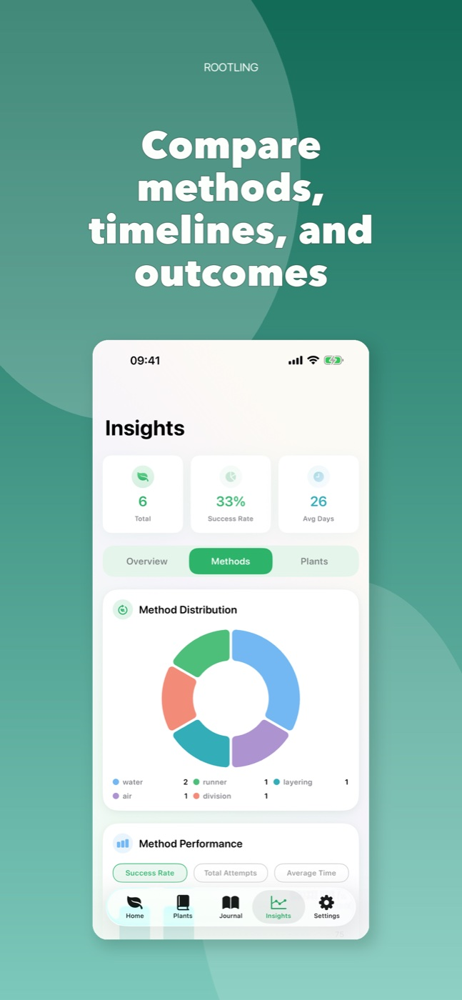

Start the cutting
Choose a plant and method, add the first photo, and record what matters while it is fresh.
Plant propagation, beautifully organised
Follow root growth from the first snip to a thriving plant. Keep photos, care reminders, notes, and results together in one calm journal.

From snip to new growth
Rootling keeps the useful details close without turning plant care into admin.
Choose a plant and method, add the first photo, and record what matters while it is fresh.
Build a visual timeline and get gentle reminders for water changes, checks, and milestones.
Compare outcomes, spot your most reliable methods, and carry what worked into the next plant.
Made for curious growers
Visual progress
Turn everyday photos into clear timelines and shareable time-lapse stories.

Care on time
Schedule water changes, root checks, and transplant reminders around each propagation.
200+ guides
Private by design
Keep data on-device or sync privately through iCloud. Rootling has no ads and does not sell your data.
Available for iPhone and iPad
Download Rootling and turn small observations into healthier plants.
Download on theApp Store